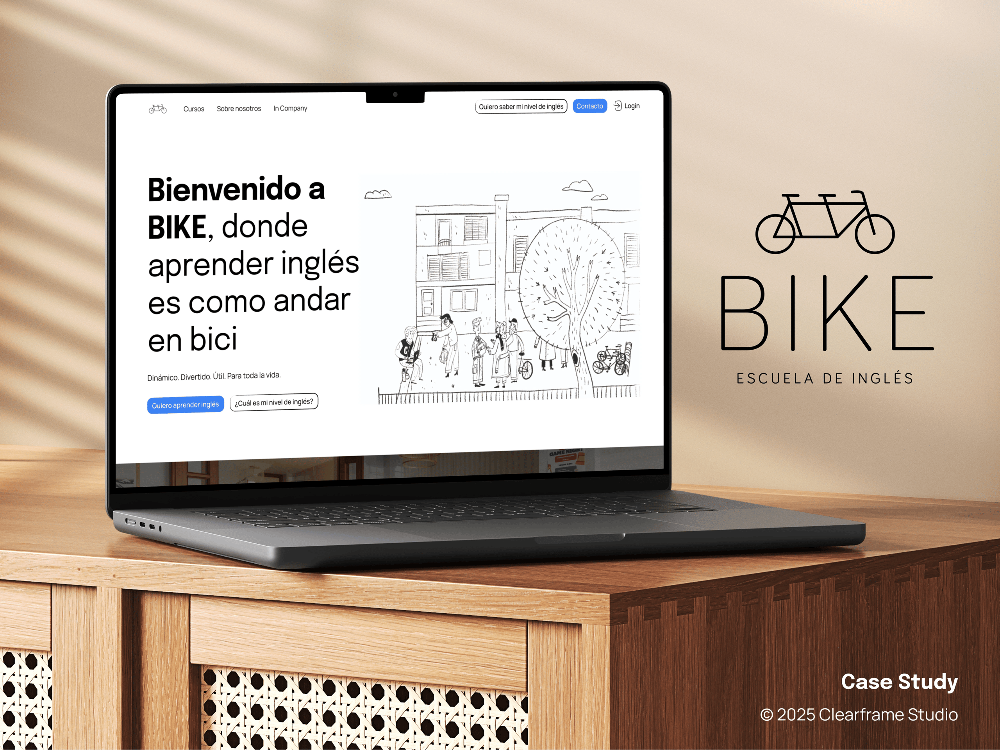

An English school that teaches by talking. The site had to do the same.

BIKE teaches English by getting people talking from day one — no grammar drills, no passive lectures. Their old site did the opposite: a slow, generic template that buried the method and leaked trial signups. They needed a site that felt as alive as a class — quick to move through, easy for the team to run, and wired into the tools the business already uses.
I rebuilt BIKE on Next.js and TypeScript, wired straight into HubSpot so every lead, level test, and course enquiry lands where the team already works. GSAP carries the motion — reveals that pace the story, a real-time level-test flow, and a homepage that earns attention without ever getting in the way.
A conversational hero with motion that paces the pitch. The method lands in the first three seconds, not the third scroll.
A real-time flow that scores English level and routes the lead straight into HubSpot — no spreadsheets, no manual follow-up.
A CMS-driven catalog the team updates without touching code — new courses ship in minutes, not tickets.
Launched on time, handed off clean. The team runs it themselves, and the numbers moved where they needed to.
Lucas turned our method into a website. It's fast, it's unmistakably us, and it finally converts — and the whole team can run it without breaking anything.